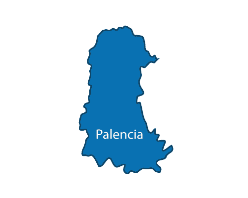
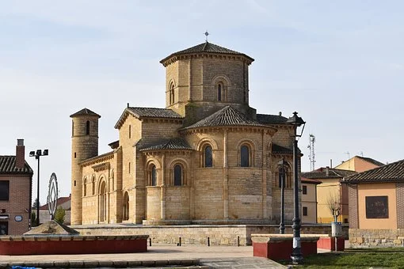

PROVINCIASAVILABURGOS LEON SALAMANCA SEGOVIA SORIA VALLADOLID ZAMORA ENLACES EXTERNOS VOLVER AL INCIO |
PALENCIAÍNDICE
1. LOCALIZACIÓNPalencia se encuentra al norte de la comunidad 2. LOCALIDADES PRINCIPALESPrincipales ciudades:Palencia, Aguilar de Campoo, Guardo, Barruelo de Santullán, Cervera de Pisuerga y Herrera de Pisuerga Ubicacion de Palencia capital: Ubicacion de Aguilar de Campoo 3. GEOGRAFÍA DE LA PROVINCIACoordenadas geograficas: Latitud: 42.0125, Longitud: -4.53117, 42° 0′ 45″ Norte, 4° 31′ 52″ Oeste Superficie: 9.495 hectáreas, 94,95 km² Altitud: 747 Clima: mediterraneo Tiempo actual de Palencia: 4. HISTORIAOrigenesEl origen de su nombre es Pallantia, de raíz celta. Estuvo habitada desde antiguo como lo demuestran los numerosos restos arqueológicos de culturas centroeuropeas muy influenciadas por pueblos celtas y los Vacceos. En el año 72 a.C. Pompeyo destruye los últimos reductos fortificados y Palencia adquiere importancia como punto logístico del ejército romano. Plinio el Viejo cita a Palencia como una de las ciudades más importantes de la meseta norte, allá por el siglo I d.C. En el siglo V, las invasiones de Suevos y Vándalos destruyen todo vestigio cultural anterior. Con la conversión de Recadero al Catolicismo en el año 586 y siendo ésta la religión oficial, se define territorialmente la Diócesis de Palencia. A mediados del siglo VII, Palencia vive una época de esplendor: se construye la cripta visigótica de San Antolín. En 711, con la invasión musulmana, Palencia cae bajo las tropas del caudillo Muza. Años de plagas y epidemias diezman la población, lo que facilitará más tarde la reconquista por parte de Alfonso I. En el año 1000 Almanzor arrasa Carrión de los Condes y posteriormente saquea Palencia. Edad MediaSancho III el Mayor, Rey de Navarra, reconstruye la ciudad e instaura la Sede Episcopal. En el siglo XI, durante el Episcopado de Don Miro, se construye una iglesia dedicada a San Miguel donde, según la leyenda, contrajo matrimonio el Cid hacia 1074. Con Alfonso VIII (1158-1214), Palencia disfruta de fueros iniciando una época de esplendor constituyéndose en el primer Concejo libre y fundando la primera Universidad de España. En 1188 nace en Palencia la hija de Alfonso VIII, la posterior Blanca de Castilla, que será reina de Francia. En 1219, el obispo Tello Téllez de Meneses consagra el nuevo templo catedralicio de estilo románico y predecesor del actual. En época de Alfonso X se produce gran inestabilidad y Palencia apoya a doña Mª de Molina en la disputa por la tutoría del menor Alfonso XI. Durante la guerra civil entre Pedro I y Enrique de Trastámara esta tierra queda desolada hasta la invasión del Duque de Lancaster, al frente de las tropas inglesas en 1387. Cuenta la leyenda que estando los hombres en otras campañas militares, las mujeres impidieron su entrada e invasión de la ciudad. A finales del siglo XIV, en 1388 se celebra en la Catedral de San Antolín la boda entre Enrique III y Catalina de Lancaster y Juan I celebra las Cortes en San Pablo. Con los Reyes Católicos, el Obispo Fonseca convierte a Palencia en “Cabecera de la Hermandad de Campos” ante la pretensión de éstos de controlar la ciudad. Sometidos y juzgados los Comuneros, Palencia se convierte en lugar de visita frecuente del Rey Carlos I, que huye de la peste de Valladolid. Reinando Felipe II, el Papa Clemente VIII desmembra la Diócesis de Palencia, que deja de ser centro de decisión. En el siglo XVI se amplía la Catedral y se organiza urbanísticamente la ciudad. Palencia se configura como ciudad eclesiástica y conventual. En 1581 se amplía la Muralla hacia el Oeste y se abre la Puerta de San Juan en el extremo Norte de la actual calle Mayor. El siglo XVIII pone de manifiesto una estructura económica desfasada y una agricultura tradicional que sume al pueblo en la pobreza. En 1751 Carlos III comienza la construcción del Canal de Castilla que finalizará en 1849. En el siglo XIX la invasión francesa obliga a alojar a las tropas napoleónicas en nuestra ciudad, que no ofrece ninguna resistencia. La desamortización de Mendizábal acaba con la estructura conventual de la ciudad y beneficia a la burguesía comercial e industrial. Terratenientes, fabricantes de harina y mantas se enriquecen durante las guerras Mundial y Civil, aprovisionando a las tropas. Desaparecen las murallas y se construyen los jardines del Salón, Jardinillos, etc. Fuente 5. CULTURAActividades de Ocio y Cultura6. NATURALEZALugares de interes 7. TRADICIONES8. OTROS ASPECTOSCinco personajes relevantes de Palencia |